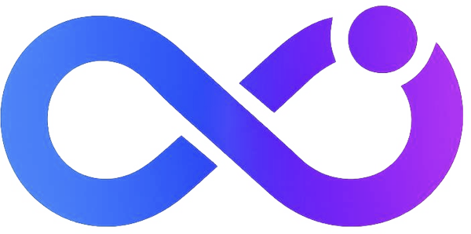

Live AI
Real-time voice conversation, powered by OpenAI Realtime. Talk to your glasses in Chat, Guide, or Assist mode while they see the frame in front of you.

Super Meta Get the appSuper Meta turns your Ray-Ban Meta glasses into a real-time AI assistant. It sees what you see and hears what you hear — answering, translating, and recognizing the world in the moment. Your provider, your keys, on your face.
“What am I looking at, and is it safe to eat?”
A ripe Hachiya persimmon. Fully soft — safe to eat now.
Nine capabilities, one editorial home screen. Point, ask, and go — no phone in your hand.
Real-time voice conversation, powered by OpenAI Realtime. Talk to your glasses in Chat, Guide, or Assist mode while they see the frame in front of you.
Speech-to-speech translation across 11 languages, in the moment. Hear the world in your language.
Instant recognition across seven modes — Siri-triggerable, so a glance and a phrase is all it takes.
Free-form Q&A about whatever the camera sees. Ask follow-ups; it keeps the context.
Point at a plate for a nutrition and calorie breakdown before the first bite.
Attach the glasses as a live node to an OpenClaw or Hermes agent gateway — a real-world sensor for your agents.
Broadcast the glasses camera over RTMP to YouTube, Twitch, or any custom endpoint.
Every vision result, saved on-device with SwiftData. Scroll back through what you've seen.
Super Meta doesn't lock you into a black box. Drop in your own key for OpenAI, Anthropic Claude, or OpenRouter and pick the model per feature. Keys live in the iOS Keychain — never on our servers, because there are none.
Connect your Ray-Ban Meta glasses over the Wearables DAT SDK. No jailbreak, no hardware mods.
Paste an OpenAI, Claude, or OpenRouter key into Settings. It's sealed in the Keychain instantly.
Trigger with Siri or the app, then just talk. Super Meta answers with everything it can see and hear.
Super Meta is in active development for Ray-Ban Meta glasses. Get early access and be first when it ships.
iOS 17+ · Ray-Ban Meta glasses · Xcode 16 to build from source.